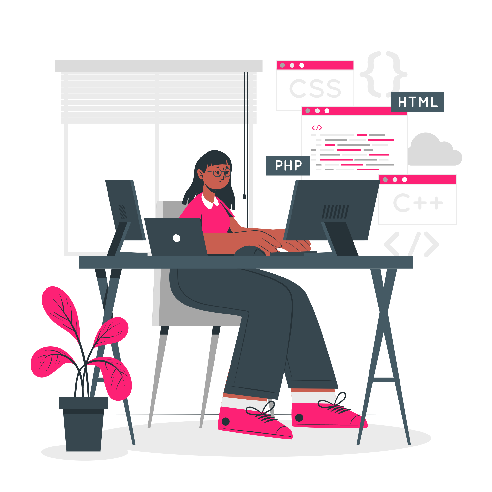
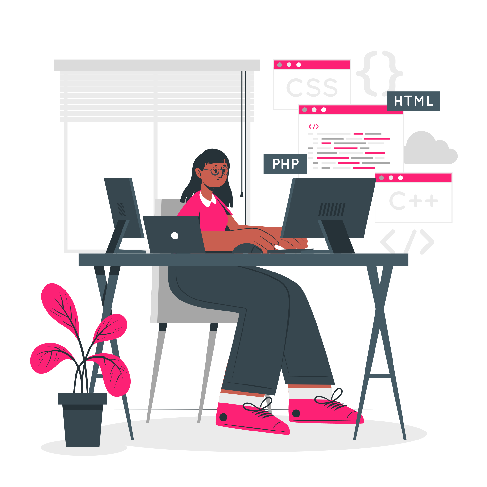

Hi, I'm Shakiran Nannyombi
 

Welcome to my portfolio!
I'm a Software Engineer in the making, passionate about Data Science, Web Development, and Design.
I love exploring new technologies, building user-friendly applications, and sharing what I learn.
Currently, I'm honing my skills in JavaScript and Python, constantly pushing my boundaries.
Let's build something amazing together!